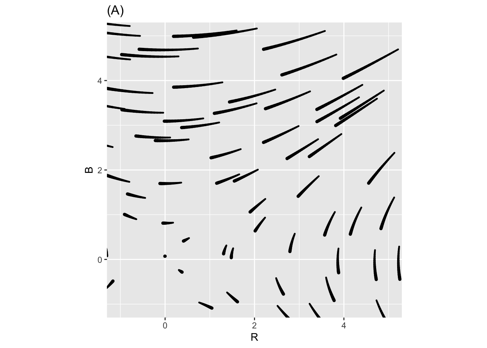
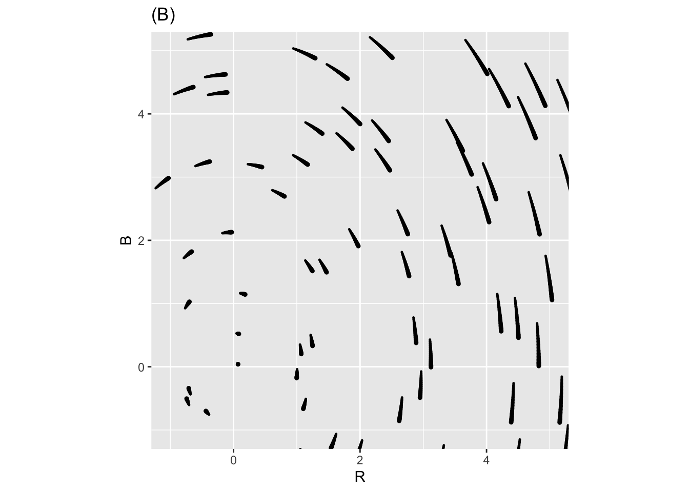
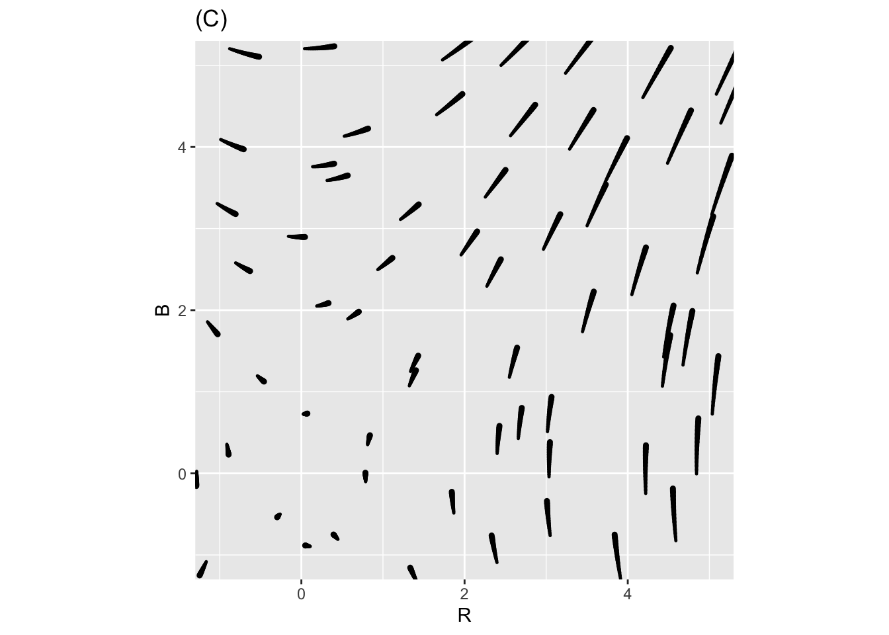
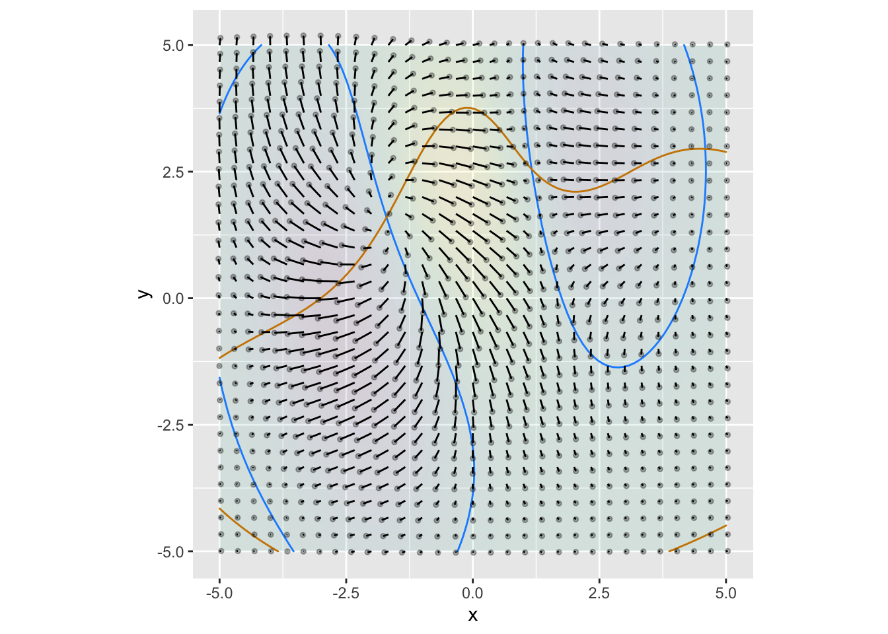
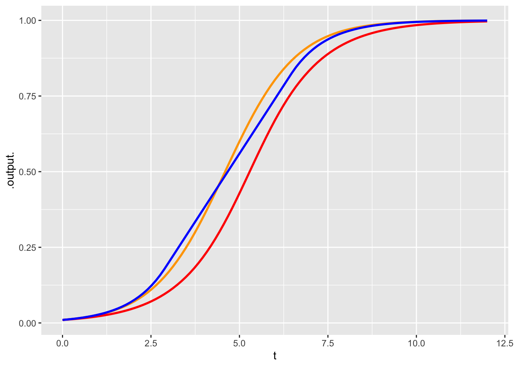

MOSAIC Week 18 Assignment
linear algebra
Remember to hand in your work …
At any point, you can submit your answers by collecting them and uploading them to the class site.
No answers yet collected
If the answers that have been loaded automatically are not yours, press this button before starting your work:
Drill
Exercise 1 Here are four different flow fields, each with nullclines displayed. For each field, say how many fixed points are visible in the plotting domain.
Plot (A) fHHPuM
Plot (B) crow-find-sofa-2
Plot (C) crow-find-sofa-3
Plot (D) crow-find-sofa-4
Exercise 2 In each of the following graphs, a flow field is annotated with a red contour and a blue contour. Your task is to determine whether a contour corresponds to a zero of the horizontal component of flow, a zero of the vertical component of flow, or neither. (Remember, if the contour is at a zero of the horizontal flow, the flow on the contour will be entirely vertical. And vice versa.)
Warning: Removed 218 rows containing missing values or values outside the scale range
(`geom_path()`).Warning: Removed 153 rows containing missing values or values outside the scale range
(`geom_path()`).- Plot A \(\color{blue}{\text{blue contour}}\):
ecm-7wlw-1
- Plot A \(\color{red}{\text{red contour}}\):
ecm-7wlw-2
- Plot B \(\color{blue}{\text{blue contour}}\):
ecm-7wlw-3
- Plot B \(\color{red}{\text{red contour}}\):
ecm-7wlw-4
Exercise 3 Describe the stability of each of the following flows.
Exercise 4 Lewis Fry Richardson (1881-1953) was an English scientist who worked in many areas, including weather prediction as described in *MOSAIC Calculus.This problem concerns a model Richardson built to account for arms races between countries.
In the model, \(x\) and \(y\) respectively refer to the size of the military of the two countries. The equations model how the size of the militaries change in time:
\[\left[\begin{eqnarray*} \dot{x} & = & a y - m x & + r\\ \dot{y} & = & b x - n y & + s\\ \end{eqnarray*}\right]\]
The terms \(r\) and \(s\) represent the basic grievances between the two countries.
The parameters \(a\) and \(b\) represent “fear,” that is, the extent to which one country feels the need to build up arms in response to the other country’s arms.
The parameters \(m\) and \(n\) are about the internal dynamics of the country: its ability/desire to sustain a large military.
- What should the signs of \(r\) and \(s\) be if the countries have substantial grievances against each other?
owl-sell-radio-1
- What should be the signs of \(a\) and \(b\), given that they represent “fear?”
owl-sell-radio-2
- What should be the signs of \(m\) and \(n\), in a country which, on its own, would not like to build a large military? Note the sign preceeding these terms.
owl-sell-radio-3
Depending on the values of the parameters \(a\), \(b\), \(m\), \(n\), \(r\), and \(s\), the Richardson dynamics can produce different outcomes. Two of the previous three plots show Richardson Arms Race dynamics for two mutually fearful countries with mutual grievances, Freedonia and Jockavia. The third plot does not; the signs of one of the coefficients has been reversed and so the dynamics don’t make sense for modeling an arms race.
Part 4. In each of the three plots, start from initial point \(x=2,y=1\), that is, a situation where Freedonia is more armed than Jackavia, and trace out the trajectory over time. What happens in the end?
- Part 5.
- For each of the three plots, find an equilibrium point (if any) and say whether it is stable or unstable.
- Which of the previous plots are Not the Richardson Dynamics?
owl-sell-radio-6
- In the Not Richardson Dynamics plot, which of the parameters is reversed?
owl-sell-radio-7
Exercise 5
- Part 1.
- Which of the three flows below corresponds to Lanchester’s Law?
hamster-bend-sofa-1



- Part 2.
- Which of these sentences best describes the dynamics of Lanchester’s Law?
hamster-bend-sofa-2
Exercise 6 Newton’s Law of Cooling is about how a hot (or cold) object comes into equilibrium with the ambient temperature. For instance, you might have a cup of coffee at \(200^\circ\)F in a room at \(70^\circ\)F. Unless you drink it, the coffee will cool with time until it reaches the room’s temperature. In this setting, \(x_\text{fixed} = 70^\circ\)F. The value of \(a\) depends on how insulated the cup is (and details of evaporation, etc.). But if the coffee reaches very near to room temperature in 60 minutes, \(a \approx 0.5\) with units 1/minute.
- Part 1.
- What are the units of the output of \(x(t)\)?
birch-bring-bed-1
- Part 2.
- What are the units of \(\dot{x}\)?
birch-bring-bed-2
- Part 3.
- What is \(x\)?
birch-bring-bed-3
- Part 4.
- What is \(\dot{x}\)?
birch-bring-bed-4
Exercise 7 We have seen that the solution \(x(t)\) to the linear dynamical system in two state variables \[\begin{array}{c}\partial_t x = ax + b y \\ \partial_t y = c x + dy\end{array} = \left[\begin{array}{cc}a & b\\c & d\end{array}\right] \left[\begin{array}{c}x\\y\end{array}\right]\] can be written as a linear combination of two exponentials:
\(x(t) = A e^{\lambda_1 t} + B e^{\lambda_2 t}\).
Let’s call the two components of this linear combination the “A-part” and the “B-part.”
In each of the following, you are given two specific numerical values for \(\lambda_1\) and \(\lambda_2\). Your task is to determine whether the A-part or the B-part (or both or neither) is transient.
- Part 1.
- For \(\lambda_1 = -1\) and \(\lambda_2 = -0.5\), which parts are transient?
fms02-1
- Part 2.
- For \(\lambda_1 = -0.01\) and \(\lambda_2 = 0.01\), which parts are transient?
fms02-2
- Part 3.
- For \(\lambda_1 = 0.01\) and \(\lambda_2 = -0.3\), which parts are transient?
fms02-3
In answering the next two questions, keep in mind that for large \(t\), \[A e^{\lambda_1 t} + B e^{\lambda_2 t} \approx A e^{\lambda_1 t}\ \ \text{when}\ \ \lambda_2 < \lambda_1\ .\]
- Part 4.
- For \(\lambda_1 = 0.01\) and \(\lambda_2 = 0.001\), which parts are transient?
fms02-4
- Part 5.
- For $_1 = -0.1 $ and \(\lambda_2 = -0.001\), which parts are transient?
fms02-5
Chapter 42
Exercise 8 Consider this two-dimensional flow field:

There are three fixed points visible. The next plots zoom in on each of the fixed points.
- Part 1.
- Is the fixed point in (A) stable or not?
bee-wake-bottle-1
- Part 2.
- Is the fixed point in (B) stable or not?
bee-wake-bottle-2
- Part 3.
- The fixed point in (C) is called a “saddle.” It is stable in one direction and unstable in another. Which of these is correct?
bee-wake-bottle-3
Here’s a system which has 4 fixed points in the region shown.
Plots (D) and (E) zoom in on two regions.
- Part 4.
- Which of the following is the best description of the behavior near the fixed point in (D)?
bee-wake-bottle-4
- Part 5.
- Which of the following is the best description of the behavior near the upper left fixed point in (E)? (Neutal stability means neither stable nor unstable; the trajectory just orbits around the fixed point.)
bee-wake-bottle-5
Let’s look a little more closely at the upper-left fixed point in graph (E):
The pattern in figure (F) is clockwise rotation around the fixed point. This kind of pattern is of fundamental importance in physics and engineering.
Exercise 9 Figure 1 shows a flow field corresponding to the dynamics of a pendulum. There are six trajectories drawn. Each trajectory starts at \(t=0\) and ends at \(t=6\).
The six trajectories come in pairs: A gray trajectory matched with a magenta one. Both trajectories within each pair have the same initial condition.
A. Read the three different initial conditions from the graph.
B. The dark gray trajectories are for the original (nonlinear) pendulum system while the \(\color{magenta}{\text{magenta}}\) trajectories are for the linearized dynamics. Describe in words the differences in the trajectories for the nonlinear and the linearized dynamics.
C. The flow field corresponds to either the nonlinear (gray) or linearized (\(\color{magenta}{\text{magenta}}\)) dynamics. Which one is it?
bgf-283-3
Exercise 10 The rabbit-fox system is nonlinear: \[\partial_t r = \alpha r - \beta r f\\ \partial_t f = - \delta f + \gamma rf\]
- Write down the English names of the four Greek letters in the above formula. (If you know how, you can insert the actual Greek letter next to the corresponding English name. You would do this, for instance, by using an app for selecting “special symbols.”)
- Using algebra, find the fixed point \((r^\star, f^\star)\) of the rabbit-fox system. (Again, use the actual Greek letters if you want, or you can use the equivalent in lower-case roman font.)
- Linearize the rabbit-fox system around the fixed point and write down the linearized dynamics in this form:
\[\partial_t r = A [r - r^\star] + B [f - f^\star]\\ \partial_t f = C [r - r^\star] + D[f - f^\star]\]
But don’t just write A, B, C, D. Instead, use the same symbols that you used in the introduction.
Exercise 11 In this exercise, you will work with a particular function f() of two variables. Construct the function this way:
The goal of this exercise is to explore the connections between the optimization method of gradient ascent or descent and dynamical systems.
Here’s a plot of the function and its gradient field.
You can construct the \(x\) and \(y\) components of the gradient \(\partial_x f(x,y)\) and \(\partial_y f(x,y)\) of f() this way:
Use these two functions to define a dynamical system: \[ \partial_t x = \partial_x f(x,y)\\ \partial_t y = \partial_y f(x,y)\]
Use
integrateODE()to integrate the equations numerically from the initial condition \((x=0, y=-3)\). Plot the resulting trajectory as a layer on top of the contour plot and gradient field. Make the time bounds inintegrateODE()large enough to get very close to the high-point in the contour plot.Modify the differential equations so that they correspond to gradient descent rather than ascent. Using the initial condition \((x=-1, y=1)\), numerically integrate the differential equations and, as in (1), plot the trajectory as a layer on the contour-plot/gradient-field. Make the time bounds large enough to get very close to a local minimum of \(f()\).
From (2), change the initial condition to \((x=-1.25, y=1)\) and plot the trajectory. What’s different from the result in (2).
This box connects to the “collect answers” button.
If you need to, do computations on the side to check things out!
More on-the-side computations if you need.

Chapter 43
Exercise 12 Lanchester’s model of combat is \[\partial_t R = - b B\\ \partial_t B = -r R\] with both parameters \(r\) and \(b\) taken to be positive.
Obviously, the state variables \(R\) and \(B\) are to be thought of as functions of time.
Locate the fixed point of the model of combat.
Is it stable? In answering this question, consider two different state spaces and explain why your answer is different in the two spaces:
- All four quadrants of the \((R, B)\) plane.
- Only the first quadrant—that is, \(0 \leq R, 0 \leq B\)—of the \((R, B)\) pane.
At a stable fixed point the state quantities—\(R\) and \(B\) here—do not change. But sometimes there are other functions of the state variables that do not change even when the state is off of any fixed point. These are called conserved quantities. Conserved quantities such as momentum and energy are important in physics.
The text introduced this conserved quantity for Lanchester’s model: \[Q(R, B) \equiv rR^2 - b B^2\ .\] Let’s explore whether the components of the quantity are conserved individually.
- Calculate \(\partial_t r R^2\). Which of these is right? (Hint: Use the chain rule of differentiation and Lanchester’s equations to simplify more.)
ptp47-3
- Perform the similar calculation \(\partial_t b B^2\). Using your result and the result from question (3), is it the case that \(\partial_t r R^2 = \partial_t b B^2\)?
ptp47-4
Here are two more candidates for conserved quantities:
- \(rR - bB\)
- \(rB - bR\)
Take the derivative with respect to time of each of them to determine if they are conserved.
- Which of (a) and (b) are conserved?
ptp47-5
Exercise 13 Here are three different first-order differential equations with fixed points at \(x^\star = 0\) and \(x^\star=1\).
- \(\partial_t x = g_1(x) \equiv x (1-x)\)
- \(\partial_t x = g_2(x) \equiv 0.25 \sin(2\pi x)\)
- \[\partial_t x = g_3(x) \equiv \left\{\begin{array}{ll} x & x < 0.18\\ 0.18 & 0.18 \leq x \leq 0.82\\ 1 -x & 0.82 < x \end{array}\right.\] The \(g_i()\) functions are graphed below.
- Part A.
- For each of the equations, match the number (i, ii, iii) to the color (magenta, blue, black). Comment on the differences in shape among them.
- Part B.
- By eye, integrate each of the differential equations from initial condition \(x_0 = 0.01\). Compare the time series plots. Do the dynamics of \(g_3()\) product a similar or radically different time series than \(g_1()\) and \(g_2()\)?

Comment: Usually, many different mathematical functions can be used to model a given phenomenon. The different functions will have similar shapes, but do not need to be identical.
Exercise 14 In the rabbit/fox system, the quantity \[Q(R, F) = \delta R - \gamma \ln(R) + \beta F - \alpha \ln(F)\] is conserved.
This means that each of the level curves (contours) in the contour plot of \(Q(R, F)\) is follows the path of a trajectory.
- Part 1.
- Make a contour plot of \(Q(R, F)\) over the domain \(0.1 \leq R \leq 3\), \(0 \leq F \leq 2\) for \(\alpha=.66, \beta = 1.33, \gamma=1, \delta = 1\).
This box connects to the “collect answers” button.
If you need to, do computations on the side to check things out!
More on-the-side computations if you need.
- Part 2.
-
From the graph you made in (1), choose an appropriate initial condition that falls on one of the contours. Then, using
integrateODE(), find the trajectory from from the initial condition in (1) for \(0 \leq t \leq 10\). Add a layer to the graphic in (1) showing the trajectory to confirm that the conserved quantities are indeed conserved.
This box connects to the “collect answers” button.
If you need to, do computations on the side to check things out!
More on-the-side computations if you need.
Part 3. Symbolically, calculate \(\partial_t Q(R, V)\). You will need to use the chain rule, which will leave you with terms \(\partial_t R\) and \(\partial_t F\). Plug in the values for these from the differential equations and show that \(\partial_t Q(R, V) = 0\).
Exercise 15 Our generic model for limited growth is
\[\partial_t x = r x (1-x/k)\ ,\] which you can see as a modification of the proportional-growth model \[\partial_t x = r x\ .\]
The proportional-growth model will lead to \(x(t)\) increasing without limit. Sometimes that is a good model over short times, before \(x(t)\) has a chance to get unrealistically big. But over long periods of time, something’s gotta give.
The limited growth model involves a carrying capacity \(k\). For \(t\) when \(x(t)\) is very small, the population growth is well approximated by the usual proportion-growth model. For intermediate \(t\), the population has grown to a large enough size that it is consuming a substantial fraction of the available resources and population growth slows. When the population reaches the carrying capacity the growth stops (e.g. birth rate = death rate).
- Part 1.
- If the units of \(x(t)\) is, say, rabbits, what is the units of \(k\)?
rhinosaurus-sharpen-knob-1
- Part 2.
- Suppose the units of \(\dot{x}\) is, rabbits per month, what is the units of \(r\)?
rhinosaurus-sharpen-knob-2
- Part 3.
- Even without finding the full solution \(x(t)\) to the differential equation, you can figure out how big the population will be when growth falls to zero. How big?
rhinosaurus-sharpen-knob-3
Exercise 16 The description of the SIR model in MOSAIC Calculus pointed out how a model of recovery \(\partial_t I = -\alpha I\) differs from the usual “recover after 7 days” style of description.
Find a value of \(\alpha\) such that the expectation value of the time to recovery is 7 days. To do this:
- Find a formula for the function \(I(t)\) from the differential equation.
- Guess an appropriate value for \(\alpha\).
- Construct the appropriate integral using \(I(t)\) to find the expectation value of \(t\). (See MOSAIC Calculus Chapter 50.
- Modify your guess for \(\alpha\) until the expectation value comes out to 7.
This box connects to the “collect answers” button.
If you need to, do computations on the side to check things out!
More on-the-side computations if you need.
Chapter 44
For the two-state variable linear dynamical system \[\begin{array}{c}\partial_t x = ax + b y \\ \partial_t y = c x + dy\end{array} = \left[\begin{array}{cc}a & b\\c & d\end{array}\right] \left[\begin{array}{c}x\\y\end{array}\right]\] the solution can be written as a linear combination of exponentials \[x(t) = A e^{\lambda_1 t} + B e^{\lambda_2 t}\ .\] For each of the following systems and initial conditions, find the coefficients \(A\) and \(B\).
- Part 1.
- \(\left[\begin{array}{rr}1 & 1\\0 & 2 \end{array}\right]\) with \(x(0) = 3\) and \(\partial_t x(0) = 1\).
- Part 2.
- \(\left[\begin{array}{rr}1 & 1\\0 & 2 \end{array}\right]\) with \(x(0) = 3\) and \(\partial_t x(0) = -1\).
- Part 3.
- \(\left[\begin{array}{rr}1 & 1\\0 & 2 \end{array}\right]\) with \(x(0) = -3\) and \(\partial_t x(0) = -1\).
- Part 4.
- \(\left[\begin{array}{rr}-1 & 1\\0 & -2 \end{array}\right]\) with \(x(0) = 0\) and \(\partial_t x(0) = 5\).
- Part 5.
- \(\left[\begin{array}{rr}-1 & 1\\1 & -2 \end{array}\right]\) with \(x(0) = 5\) and \(\partial_t x(0) = 0\).
Exercise 17 For the linear dynamical system in two state variables \[\begin{array}{c}\partial_t x = ax + b y \\ \partial_t y = c x + dy\end{array} = \left[\begin{array}{cc}a & b\\c & d\end{array}\right] \left[\begin{array}{c}x\\y\end{array}\right]\] the two values of \(\lambda\) are \[\lambda_1 = \frac{1}{2}\left(a + d\right) + \frac{1}{2}\sqrt{\left(a - d\right)^2 - 4 b c}\\\lambda_1 = \frac{1}{2}\left(a + d\right) - \frac{1}{2}\sqrt{\left(a - d\right)^2 - 4 b c}\]
Part 1.
Using simple algebra, derive these two facts:
The sum \(\lambda_1 + \lambda_2 = a + d\).
The square of the difference \(\left(\lambda_1 - \lambda_2\right)^2 = (a - d)^2 - 4bc\).
The above two facts provide the path to finding a set of values \(a, b, c, d\) that will generate any given set \(\lambda_1\) and \(\lambda_2\). First, pick any \(a\) and \(d\) to match the sum, then use these values in the formula for the square of the difference to choose an appropriate \(b\) and \(c\).
- Part 2.
- Find an appropriate set \(a, b, c, d\) to give \(\lambda_1 = 4\) and \(\lambda_2 = -2\).
- Part 3.
- Find an appropriate set \(a, b, c, d\) to give \(\lambda_1 = -1\) and \(\lambda_2 = 1\).
- Part 4.
- Find an appropriate set \(a, b, c, d\) to give \(\lambda_1 = -2\) and \(\lambda_2 = 2\).